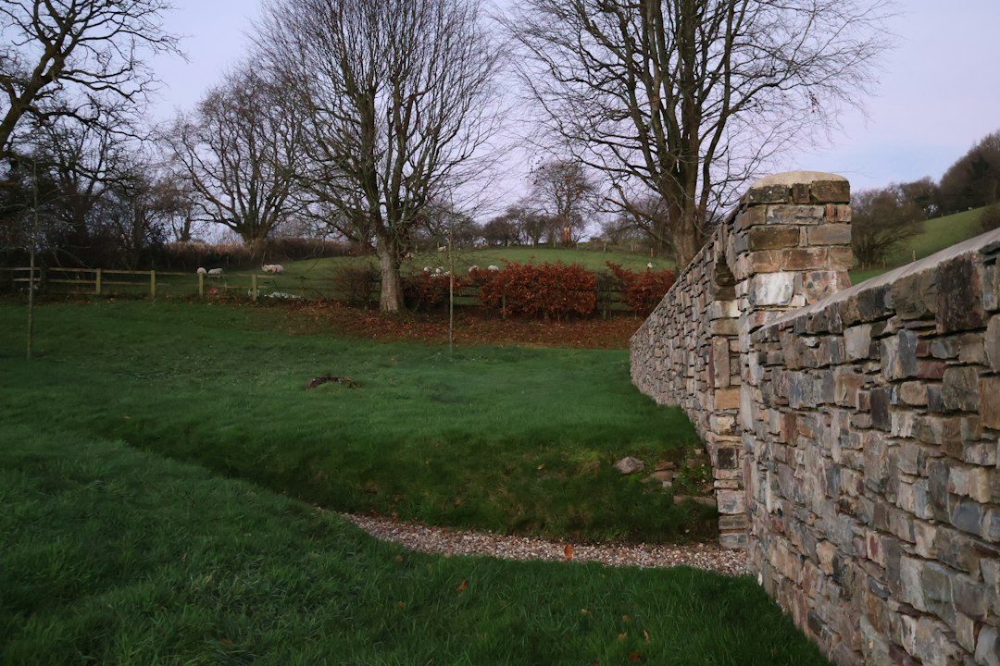

For Perth retaining projects, the core checks are height, location, load and material. The source page says a building permit is generally needed once a wall retains more than 0.5 metres of ground, and engineered walls are typically designed to AS 4678. Limestone block and post and panel concrete are the two main systems highlighted for Perth, while costs and repairs depend on site conditions, drainage, footing condition and material state.
For homeowners comparing retaining walls perth options, the practical decision is how the wall will hold soil, drain water, meet WA approval rules and suit the block.
Retaining Walls Perth Explained
Retaining Wall Perth frames the decision around two questions before material choice: what ground the wall must retain, and what WA approval or engineering rules may apply. A low garden terrace, a boundary wall and a driveway edge are not the same project, even if they look similar in a photo.
The source page identifies limestone block and post and panel precast concrete as the systems Perth most often builds with. It also points to timber sleeper, rock and boulder, besser block, drainage, engineered walls and repairs as distinct service situations rather than interchangeable labels.
- Ask what height of soil is being retained, not just the visible wall height.
- Check whether the wall is on a boundary, supports nearby loads or forms part of other building work.
- Make drainage part of the quote conversation, not a late extra.
Material Choice By Site Condition
Limestone block is described as a natural fit for Perth's sandy Swan Coastal Plain blocks and local streetscape. Post and panel, sometimes called twin-side, uses posts with precast concrete panels slotted between them and is presented as a fast, consistent-finish option for boundaries and driveways.
Besser block is positioned differently: core-filled, steel-reinforced concrete blockwork for taller retaining and rendered finishes. Timber sleeper walls are described for gardens, terraces and low boundary retaining. Rock and boulder walls are suited to rugged, free-draining finishes on Perth hills and granite-outcropped sites.
A useful comparison is not which material is best in the abstract. It is whether the wall height, soil, finish, access, boundary condition and drainage detail match the system being priced.
Approval And Engineering Questions
The published guidance says a building permit from local government is generally needed once a wall retains more than 0.5 metres of ground. It also notes that a wall of any height can need approval if it is tied to other building work, affects or protects adjoining land, or affects a boundary wall or dividing fence.
Some councils named in the source material, including Wanneroo and Melville, may count the combined height of tiered walls toward the 0.5 metre figure. That is a reason to ask the council or builder how the wall will be assessed, rather than assuming each step is treated separately.
For engineered walls, the source page refers to AS 4678 and WA-registered building engineering practitioners. A quote for that type of wall should make clear who is responsible for design documentation, permit support and the final construction detail.
Drainage, Repairs And Failure Clues
The source material treats drainage as structural detail, naming ag-drain, gravel and geofabric behind retaining walls. It also links poor performance to site realities such as Perth's winter-saturated sandy ground, so the drainage line in a quote deserves the same attention as blocks, panels and posts.
Repair pricing is described as dependent on failure mode. A leaning timber sleeper section is not the same scope as a bulging block wall that may need partial demolition and rebuilding. Assessment should look at drainage, footing condition and the state of the material before a repair number is treated as reliable.
For a second editorial overview of local retaining wall choices, see this Perth retaining wall guide.
Who This Applies To
This guide is for Perth homeowners comparing residential retaining wall options, especially where the work involves limestone block, post and panel concrete, timber sleepers, besser block, rock or boulder walls. It is also relevant when an existing wall is leaning, bulging or cracked and the owner needs to separate cosmetic repair from structural replacement.
It applies most clearly to projects where height, boundaries, tiered walls, drainage or nearby loads could affect design and approval. It is less useful for purely decorative garden edging that does not retain meaningful ground, except as a prompt to ask whether the planned work is really retaining soil.
- Describe the site. Give the suburb or postcode, wall location, approximate retained height, boundary condition and whether the wall supports a driveway, fence or other load.
- Ask about approval. Check whether the 0.5 metre threshold, tiered wall height, boundary effect or adjoining land issue means a local government permit may be needed.
- Compare material logic. Ask why limestone, post and panel, besser block, timber or rock suits the block rather than choosing only by appearance.
- Confirm drainage scope. Look for ag-drain, gravel and geofabric details where drainage is part of the wall's structural performance.
- Separate repair from rebuild. For damaged walls, ask for assessment of failure mode, drainage, footing condition and material state before accepting a repair scope.
| Option | Where it fits | Quote question |
|---|---|---|
| Limestone block | Perth sandy blocks and local streetscape fit | Is the block type suitable for the wall height and site access? |
| Post and panel concrete | Boundary and driveway retaining with consistent finish | Are the posts, panels and drainage included in the same scope? |
| Besser block | Taller engineered walls and rendered finishes | Who provides the engineering and permit documentation? |
| Timber sleeper | Garden terraces and low boundary retaining | What is the sleeper type and how is drainage handled? |
| Rock and boulder | Rugged, free-draining Perth hills style sites | Is the wall battered back and suited to the ground conditions? |
Common questions
Do Perth retaining walls always need council approval? No. The source page says a permit is generally needed once a wall retains more than 0.5 metres of ground, but lower walls can still need approval if they affect other building work, adjoining land, a boundary wall or a dividing fence.
Which retaining wall material is most common in Perth? The source page highlights limestone block and post and panel precast concrete as the two main systems Perth builds with. The better choice depends on wall height, finish, ground condition, access and drainage.
What should a retaining wall repair quote include? It should start with the failure mode. The source page says repair cost depends on whether the problem is, for example, a leaning timber sleeper section or a bulging block wall needing partial demolition and rebuild.
Why is drainage discussed so much for retaining walls? The source page describes ag-drain, gravel and geofabric as the structural detail behind the wall. It specifically connects drainage with performance in Perth's winter-saturated sandy ground.
This guide covers Perth retaining wall material choice, drainage, repair assessment and WA approval questions using the supplied published source material.